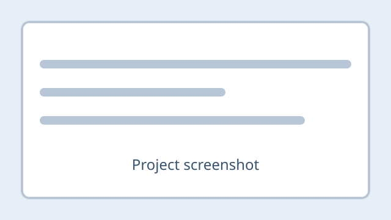

Selected work
Projects
These examples are starting points. I’ll replace each TODO with work from my coursework and personal practice, sharing outcomes without exposing sensitive technical details.

TODO · Project example
Network Fundamentals Lab
Problem
TODO: Describe the networking question or goal for this practice lab.
What I did
TODO: Summarize the steps you took, keeping network details general.
Tools
TODO: List the tools or software you used.
Outcome
TODO: Share the result and one thing you learned.
TODO · Project example
Connectivity Troubleshooting
Problem
TODO: Describe a general connectivity issue you investigated.
What I did
TODO: Explain how you isolated the issue and checked your assumptions.
Tools
TODO: List the tools or references you used.
Outcome
TODO: Note what you resolved or what you would try next.
TODO · Project example
Security Practices Review
Problem
TODO: Describe a safe, classroom-focused security learning goal.
What I did
TODO: Summarize your defensive or awareness-focused approach.
Tools
TODO: List appropriate tools, course materials, or references.
Outcome
TODO: Share the takeaway or improvement you identified.